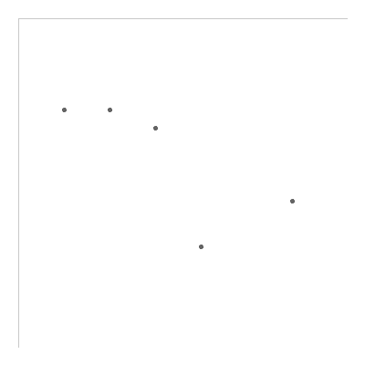
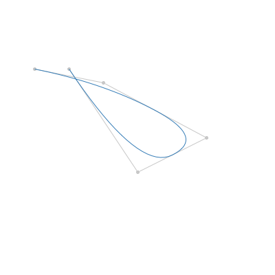

For a standard Delv Processing project, the following directory structure is recommended:
your_project_directory
your_app.xhtml – See xhtml Layout Templates for a layout template.
- your_javascript_app.js – This file contains the logic to construct and connect the
visualizations together, including configuration of the views. See Javascript Templates for an example of how to setup Delv and configure views.
your_project_directory.pde – to have this sketch run in Processing as well as in the web browser, make sure that your main .pde file in this directory has the same name as the directory itself. [1]
your_processing_vis.pde – This file contains the view for one visualization type. See Processing Templates for an example View. [2]
your_other_processing_vis.pde – This file contains the view for another visualization type. [2]
Delv.pde [3] If you prefer not to copy Delv.pde, you can link to it instead:
cd your_project_directory; ln -s </path/to/delv/delv_processing/Delv.pde>
delvjs – In order to work in the web browser, the javascript code should be in a subdirectory relative to your xhtml. If you prefer not to copy the contents of delvjs, you can link to it instead:
cd your_project_directory; ln -s </path/to/delv/delvjs>
- delv.js
- jquery-1.7.2.js
- processing-1.4.0.js
| [1] | Usually this main sketch is only used in the Processing environment, and should NOT be loaded by your_javascript_app.js |
| [2] | (1, 2) Make sure all processing .pde files including Delv.pde are explicitly loaded in your_javascript_app.js |
| [3] | For the web browser, this file could be in another location, but to work in Processing it needs to be in the same directory of your sketch (you can use a link if you don’t want to copy the file). |
For this tutorial, we will take two existing stand-alone Processing sketches, run them independently, and then wrap them in the Delv framework. Once they’ve been wrapped, we’ll create a Processing application using the views, and then modify them to make them respond to more interaction types. Finally, we’ll create a javascript application using the same views.
Let’s start by running the existing sketches. Start Processing, then open the scatterplot.pde sketch via File->Open..., navigate to delv->examples->scatterplot and select scatterplot.pde. When you run the sketch, you should see something like the following:
Next run the bspline_curve.pde example found in delv->examples->bspline_curve to get something like this:
The scatterplot is a 2-dimensional view, using 2 columns of data for the x and y positions. Thus, we can use the existing Delv2DView class, and just extend it to meet our scatter plot needs. First let’s open up the tutorial.pde sketch found in delv->examples->tutorial and click on the scatterplot tab.
We need to add the following at the very beginning of the file in order to become a Delv 2D View:
class ScatterplotView extends Delv2DView {
and then we close the class definition at the very end of the file with:
}
Now we’ll rename and modify the setup() method so that it becomes our new class constructor. Change the code starting at void setup() to:
ScatterplotView(String name)
{
super(name);
w = 400;
h = 400;
point_rolled_over = false;
rolled_over_point = 0;
}